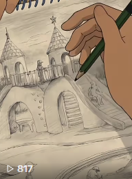
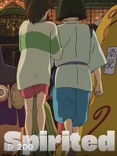

Studio Ghibli · 2004
Howl's Moving Castle
A short-form edit of Howl's Moving Castle focused on atmospheric transitions and layered audio.
Short-form video production: audio-visual storytelling using motion graphics, pacing, and thematic editing techniques
Alongside instructional design, I've been building my skills in video editing and production, learning how to professionally manage a social media platform along the way. Here's a look at what I've made so far.
Studio Ghibli · 2004
A short-form edit of Howl's Moving Castle focused on atmospheric transitions and layered audio.

Studio Ghibli · 2014
A short-form edit of When Marnie Was There focused on soft visuals and emotional pacing.

Studio Ghibli · 2001
A short-form edit of Spirited Away focused on dynamic cuts and immersive sound.